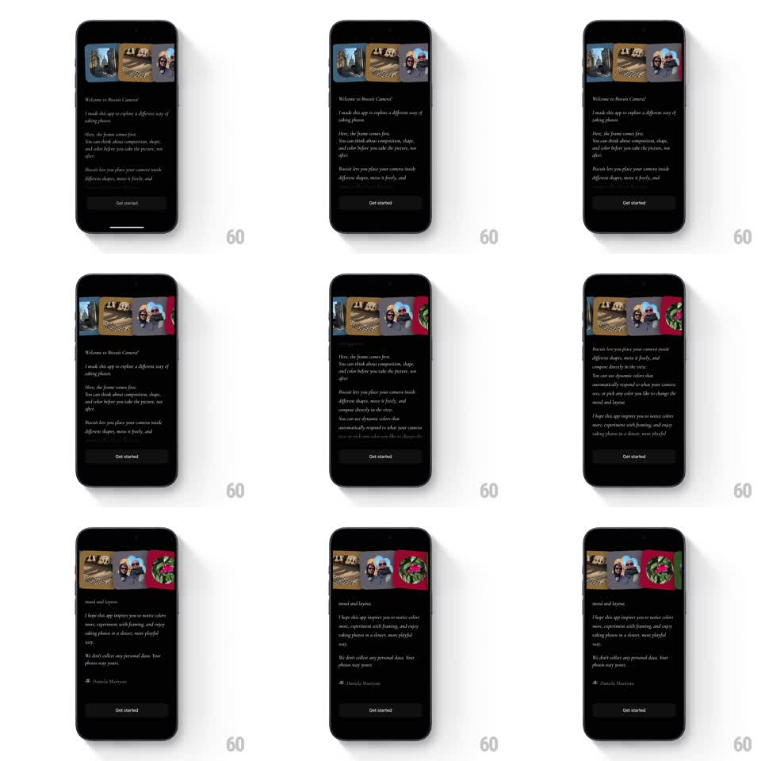

Media
Frame-by-frame

Rebuild this interaction 1:1: Biscuit Camera's creator-note intro - scrolling the welcome letter vertically drives a horizontal strip of sample photos at the top, the gallery translating in the opposite direction as you read.

Rebuild this interaction 1:1: Biscuit Camera's creator-note intro - scrolling the welcome letter vertically drives a horizontal strip of sample photos at the top, the gallery translating in the opposite direction as you read. ## Integration Integration: stack-agnostic spec - springs given as stiffness/damping, timed motions as duration + curve; map every value to your framework and animation library of choice. ## Scene Biscuit Camera intro, near-black: a horizontal gallery strip across the top (sample photos in rounded frames, slightly overlapping), then the letter - "Welcome to Biscuit Camera!" and several warm paragraphs from the creator, signed - with a dark "Get started" button pinned at the bottom. ## Motion spec Pattern: vertical scroll driving counter-directional horizontal gallery. - The letter scrolls normally (1:1 vertical); the gallery strip translates horizontally opposite the scroll direction (scroll down -> gallery slides left) at ~0.6x the scroll speed, with soft momentum after flings. - Gallery photos are layered at slight offsets - a shallow parallax: nearer frames move ~10% faster than far ones, and each frame has a resting tilt of +/-2 degrees. - As the letter's paragraphs pass the gallery, they fade in (opacity tied to viewport entry, 200ms window) - the text assembles as you read. - At scroll end the gallery settles with a spring (~300/20) and the signature line is the last element to fade in (300ms). - "Get started" stays pinned and static throughout - only its opacity fades in once on first paint. ## Calibration - The counter-motion is gentle - the gallery should feel coupled to the scroll, not racing it. - Photos are warm and filmic against the dark ground - the strip is the app's pitch. ## Reduced motion Gallery stays fixed; paragraphs fade in on entry (200ms). ## Don't miss - The gallery never fully leaves the screen while scrolling - it bleeds off one edge only at the letter's end. - Frame tilts are resting states, not animated - the charm is the collage, not motion.